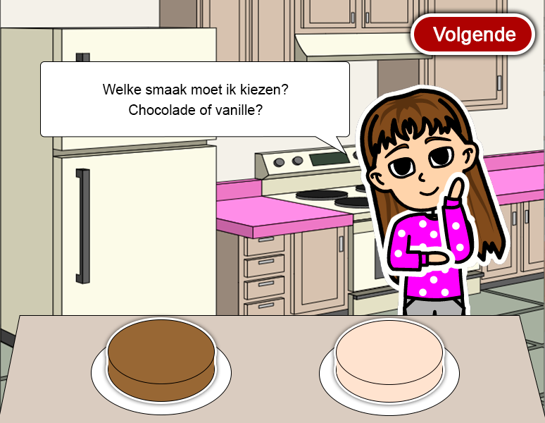
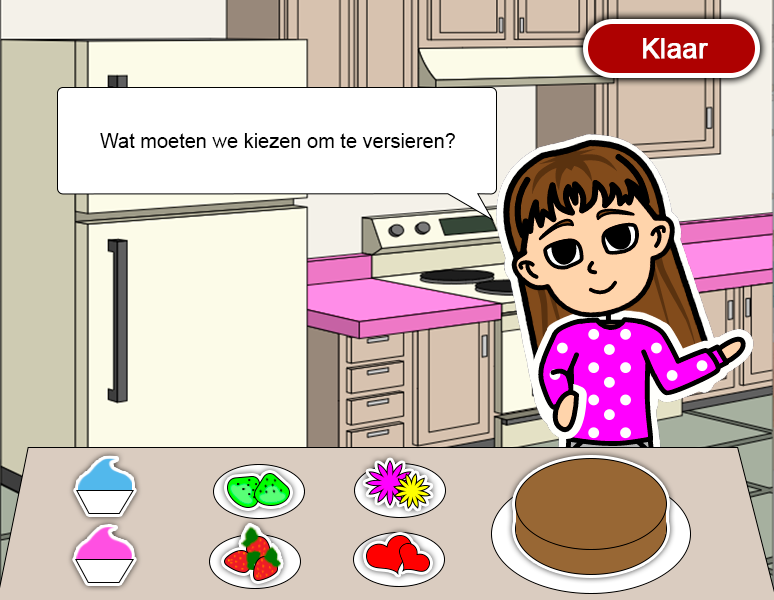
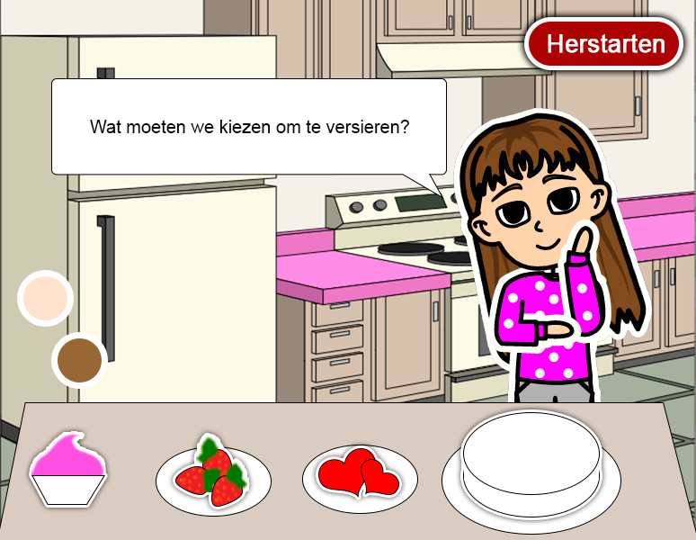
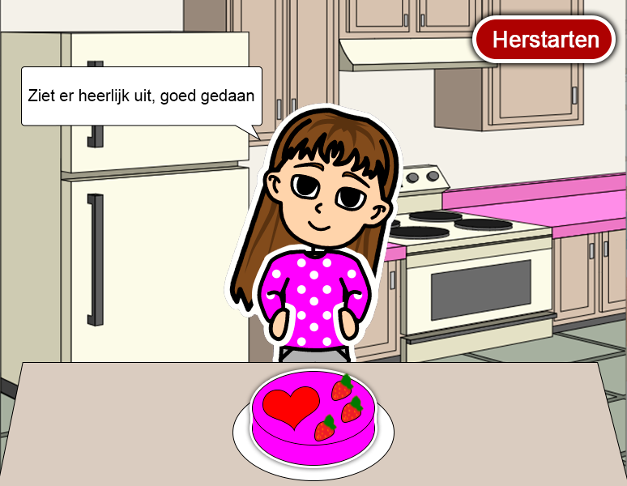
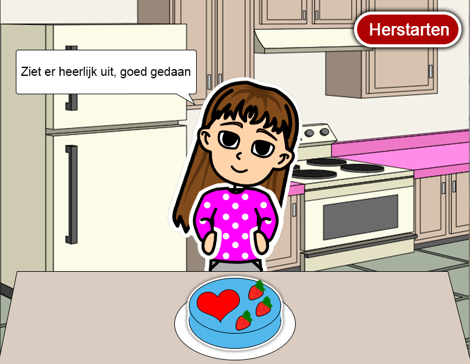
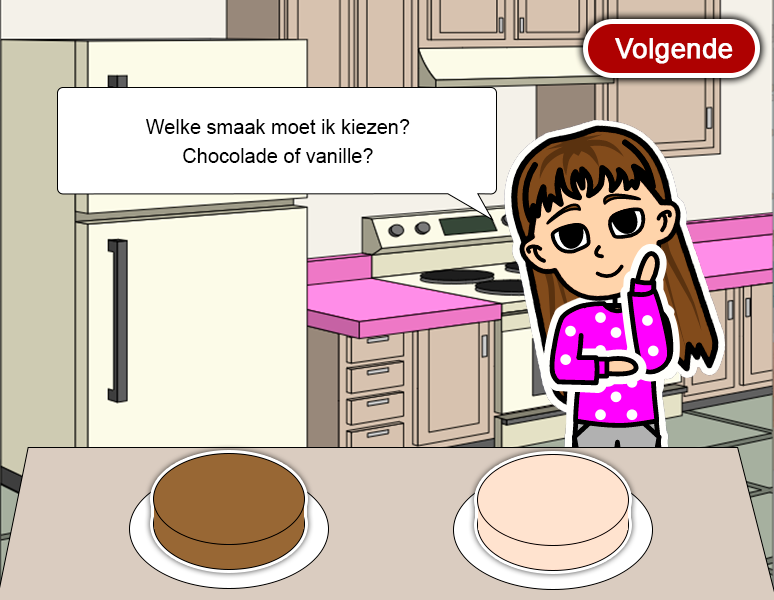
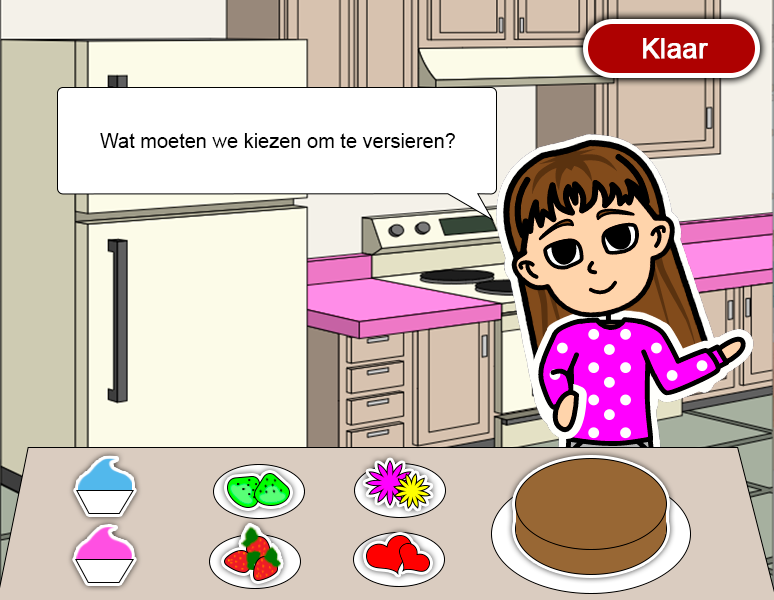
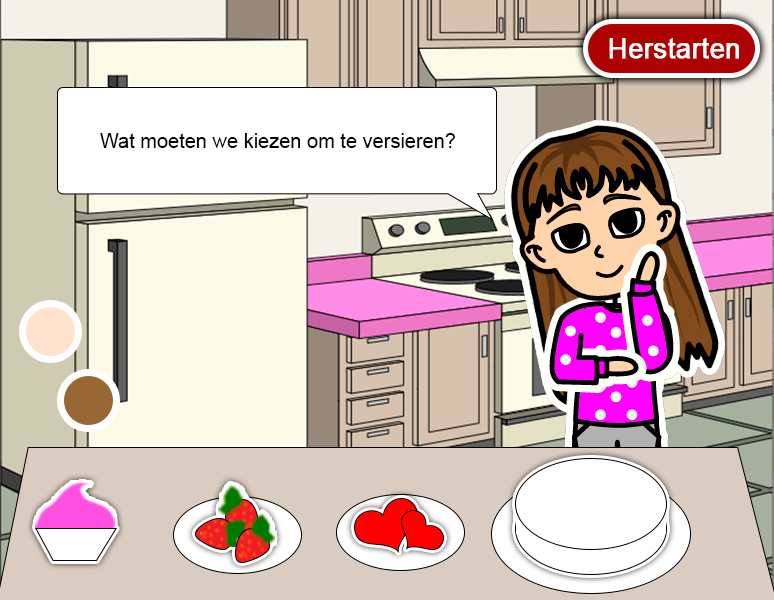
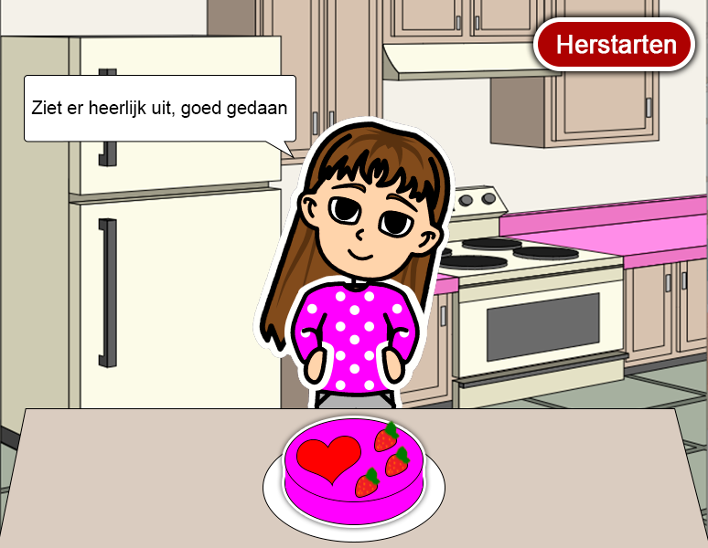
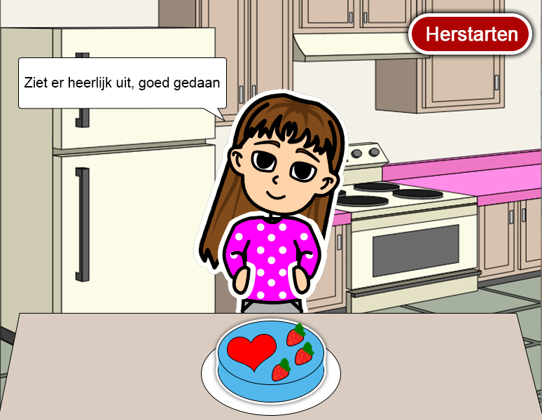

Cake decoratie spel.
Hebben we dit opdracht gedaan om het basis van JavaScript te leren, het was een leuke taal waar kunnen we verschillede dingen doen die kan onze werk meer interactief en leuk te gebruiken.
Waar ik trots op ben in mijn werk:
- voorbereiden fase
Als eerste stap, heb ik mijn idee ontworpen en gebouwd op photoshop en een site waar ik mijn popje en de achtergronden heb gemaakt. Na dit heb ik mijn idee gescherpt, daarna verbeteert door het proces volgens het nieuwe kennis die ik elke week het heb geleerd.

 









- De code
We hebben op het begin van het vak onze einddoel gekozen en dan lopen door het vak om onze code kennis bouwen en vergroten en dan in onze eigen opdracht toepassen.

- De JavaScript
Ik heb trots op mijn JavaScript code, want het was mijn tweede ervaring om HTML en CSS code schrijven, maar het is mijn eerste keer om JavaScript code te schrijven en het was erg mooie ervaring voor mij. Ik heb trots op mijn (cake elementen) Stuk van mijn JavaScript code, want het was het zwaarste stuk voor mij, ik moest veel dingen met elkaar toepassen en over verschillende reacties en interaties denken, maar ik heb veel van het geleerd en het werkte in het eind zoals ik wild.

- Eind resultaat
Ik heb trots op mijn eindresultaat, want het staat leuk uit en alles staat waar hij moet staan en werkt goed zonder fouten meldingen of vertragingen. De interacties was leuk om te doen,zien en horen, dus ik kan in het toekomst beter resultaat hebben, als ik meer over JavaScript geleerd heb. Mijn feest effect was heel simpel met het gebruik van een gif feest, maar met een mooie resultaat met het geluid in het achtergrond en het springe meisje.